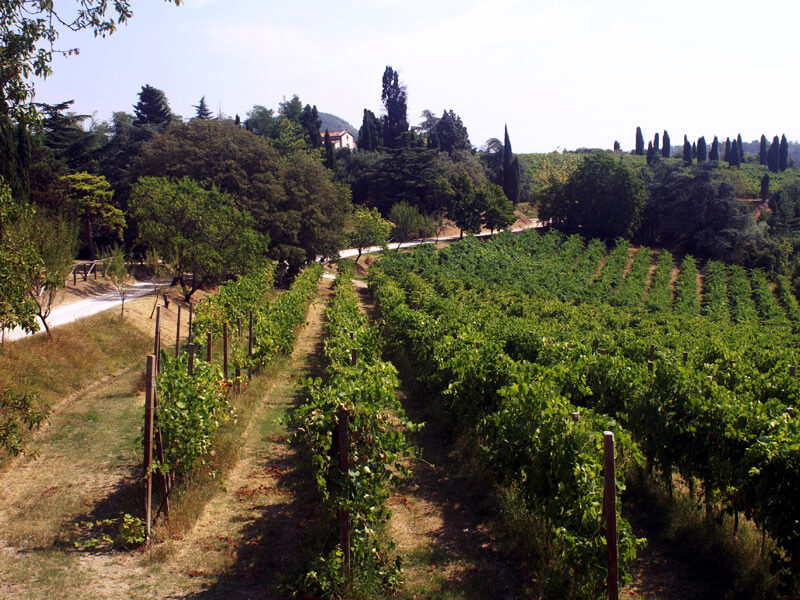

N. 4 - Sentiero del Monte Venda G.G.Lorenzoni
Loc. Sottovenda - Galzignano Terme
La partenza del sentiero, presso Casa Marina in località Sottovenda. Dopo un tratto
di strada bianca, una
rapida salita sulla destra conduce all'antica Fontana Olivato, oltre la quale il sentiero gira sotto
un grande carpino nero, sale su un ripiano ed entra in un castagneto luminoso con roverella,
orniello,
carpino nero e dal sottobosco ricco di fioriture primaverili di varie specie.
Proseguendo si incontra una piazzola di una vecchia carbonaia. Dopo un rettilineo
si giunge ad una sporgenza
rocciosa dove, grazie alla maggiore esposizione solare, troviamo specie di macchia mediterranea,
come
cisto a foglie di salvia, dittamo e asparago pungente. Segue una rientranza e una nuova sporgenza
rocciosa.
Da qui la stradina si abbassa fino a un gruppo di ontani neri, caratteristici di zone umide. In
questa
zona vi era una carbonaia: il carbonile dea busa dei onari.

Vista dal monte Fasolo
Il sentiero prosegue leggermente in salita; supera un dosso e si allarga poi in una
piazzola sostenuta da
massi trachitici, anticipata da un grande acero montano. Poco dopo inizia una breve salita sassosa.
Si
nota in alto una massiccia roccia: è la Pria de Scanavaca, nel cui vallone sottostante hanno le loro
tane tassi, volpi e faine. Il castagneto termina presso un piccolo scoglio di breccia riolitica
lasciando
il posto a una boscaglia di robinia e sambuco. Si svolta a sinistra nel fresco e umido versante
settentrionale.
Proseguendo, il sottobosco diventa più ricco e vivace e, dopo aver superato un
bivio che scende a destra
verso il Roccolo, al culmine del poggio si svolta a sinistra. Inizia un breve e impegnativo tratto
in
salita, fino alla deviazione per i ruderi del Monastero degli Olivetani; si prosegue quindi in
discesa.
Oltrepassate due panche si continua in discesa e, dopo un tratto di sentiero lastricato in pietra,
si
sbuca sulla strada militare che sale alla dismessa base aeronautica di Castelnuovo. Si segue per un
tratto
la strada asfaltata fino al primo tornante, la si abbandona proseguendo a destra lungo la stradina
che
porta a Casa Brombolina. Dopo la curva si segue la deviazione che scende in un avvallamento e risale
poi in un bosco di robinia, riprendendo il tracciato originario. Seguendo il perimetro della base
militare,
si raggiunge la sommità di un crinale con percorso a saliscendi e, attraversata una valletta umida,
si
punta in salita. All'incrocio si prende a sinistra in salita; si giunge sul ripiano sassoso del
carbonile
del corno per uscire sullo spigolo luminoso del Corno del Venda. Si passa al versante sud, ricco di
essenze
mediterranee. Il tracciato riprende prima in salita e poi tagliando in piano il versante, con
percorso
panoramico. Si entra in un bosco misto e si affianca nuovamente la recinzione dell'ex base militare;
si scende fino a incrociare un tracciato più ampio che risale lo spallone a sud-est proveniente
dalle
Fontane. Il tracciato ora scende lungo la tagliata dell'elettrodotto, percorre tre tornanti in
rapida
successione e incrocia la deviazione che sale ai ruderi del monastero. Qui imbocca il sentiero a
gradini
di pali di castagno che scende fino a riprendere il tratto iniziale del sentiero.


 Italiano
Italiano
 English
English